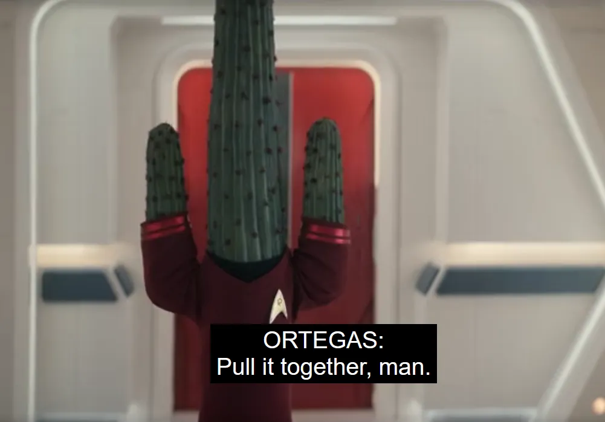

@c6reviews.
@c6reviews.
I am known on this website for getting on my soapbox and saying things like:

All Star Trek is Star Trek. Different people and different generations have different definitions of what Star Trek is for them, and it's not always one specific thing. Calling an episode or an entire series “Not Star Trek” is close-minded and simply untrue – one shouldn't hold Star Trek to a standard based on the past!
...but even I have my limits. Strange New Worlds is three episodes into its fourth season and I'm not excited to keep watching it. I am all for experimentation and doing things differently on occasion, but so far this season is leaving me thinking, “Hey, would you like to try doing an episode in the genre of Star Trek soon?”
Episode 1 was fine. Sure, there was some silly time-travel shenanigans, and I'm always a little wary when Trek makes hugely-impactful stories about our “real” history, but it was enjoyable, overall. Then Episode 2 came, and I thought, “Okay, we're doing a horror ghost-story this week. That's fine.” I don't even think it was executed all that well, but I'm not here to get into those specifics. Some day after the entire series wraps and I start writing my honest reviews for SNW on this website, I can get into all that detail then, with the benefit of hindsight.
And then came Episode 3, and I nearly fell off my chair rolling my eyes at it. As someone who readily defends Star Trek, even when it veers away from its usual fare, this episode sort of made me give up on the series. I went into Season 4 thinking, “There are exactly 16 episodes left of this show. 16 episodes to showcase why Trek is so special and why it should have a long, successful life on the small screen”... and now I'm just thinking “Oh, okay, we're not going to take this seriously and we're just going to squander the rest of the episodes. Got it.”
Don't get me wrong: there were moments in Episode 3 that I legitimately laughed at. It was funny! But I tuned in to Star Trek this week to watch Star Trek, not to watch a Star Trek-flavored version of The Hangover. Look, if you want to do the occasional off-the-wall episode, great! But I feel like your series has only earned that right when you've established a firm status quo. Let's look at what's ahead: Episode 4 might be somewhat normal, but the description for Episode 5? “A transporter malfunction turns most of the crew into puppets while Spock fights to reclaim the ship.” You know what? That sounds like fun, and I'm sure it will be funny. But now I really have to wonder, “What is this show? How will it be remembered? Is this a legitimate Star Trek story, or is it just a live-action version of the farcical Lower Decks?”
Episode 7: “A temporal anomaly traps the crew inside a soap-opera reality...”. Episode 9: “La'An enters a genuine fantasy world where the fairy tale becomes a personal test...”. You know, I never thought I'd be siding with the people who just want a good-old space-adventure of the week. Go to a planet, discover a mystery, solve the mystery, move on to the next planet. It's a simple formula, but it's one worth revisiting once and a while, wouldn't you say? ◼